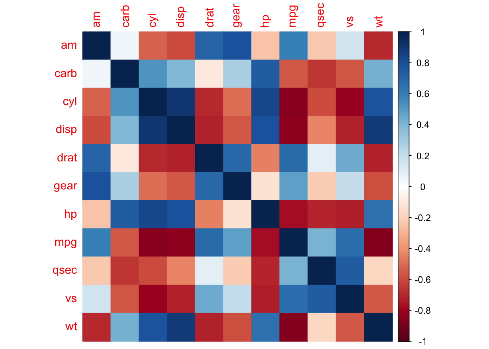
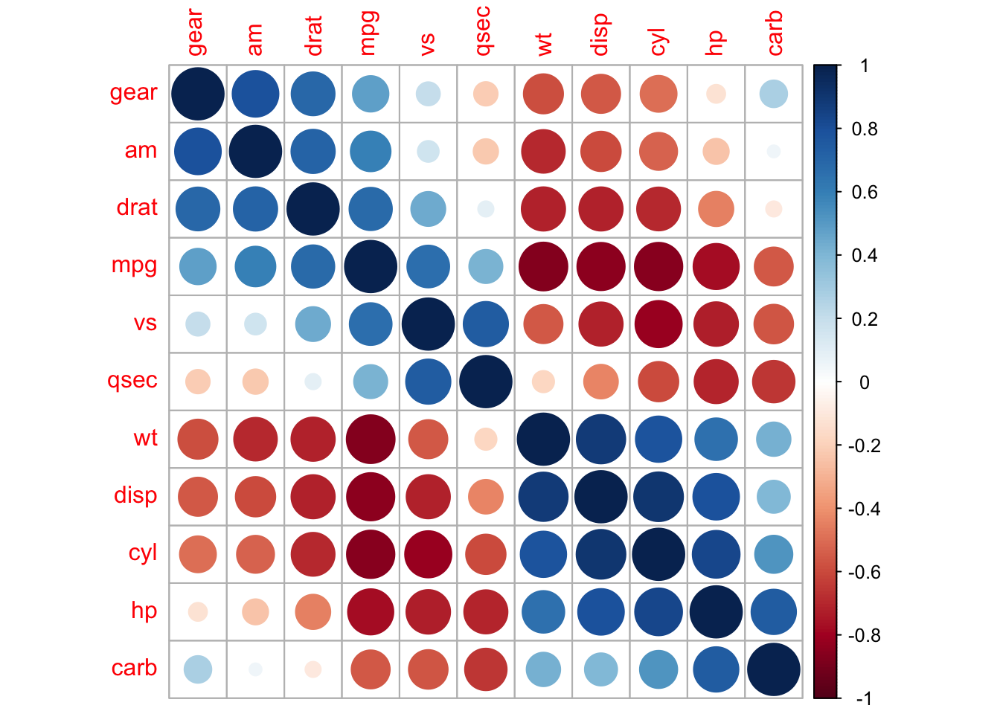
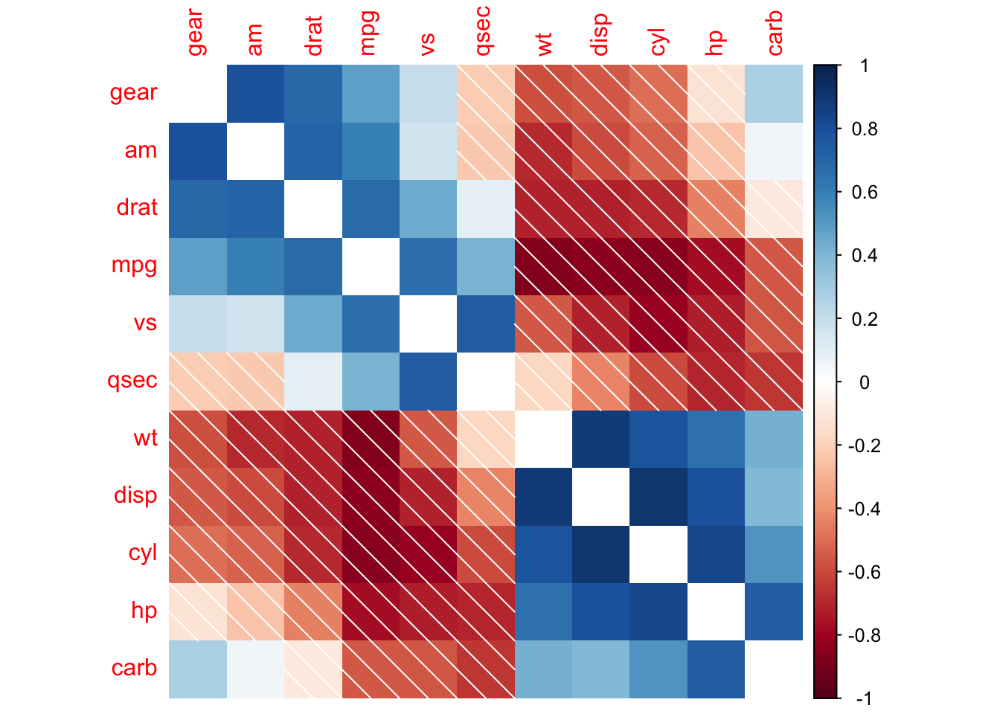
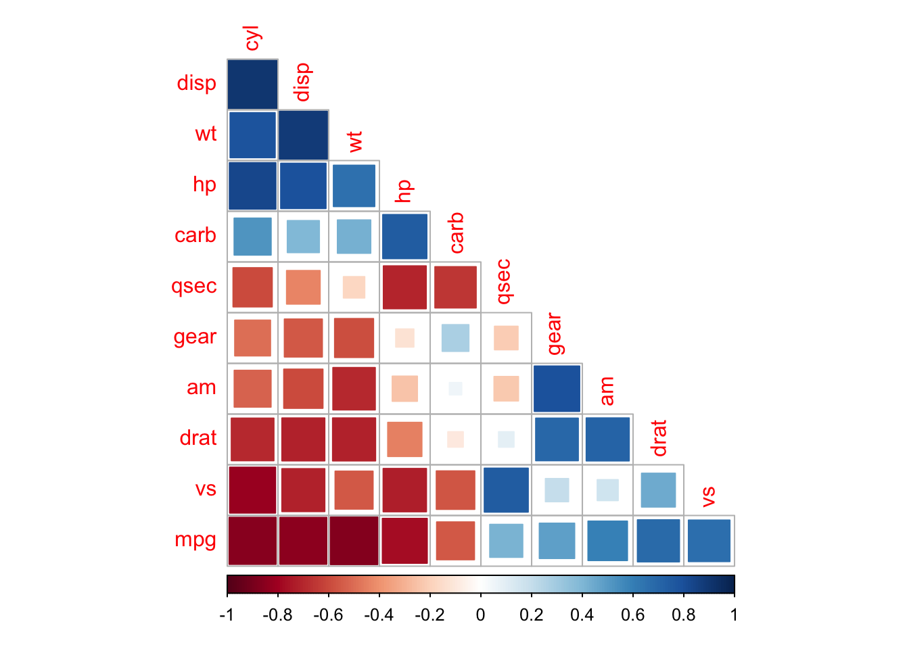
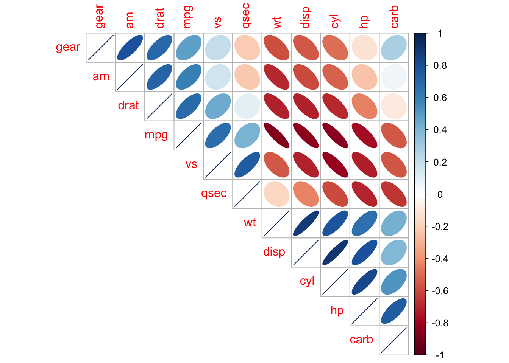
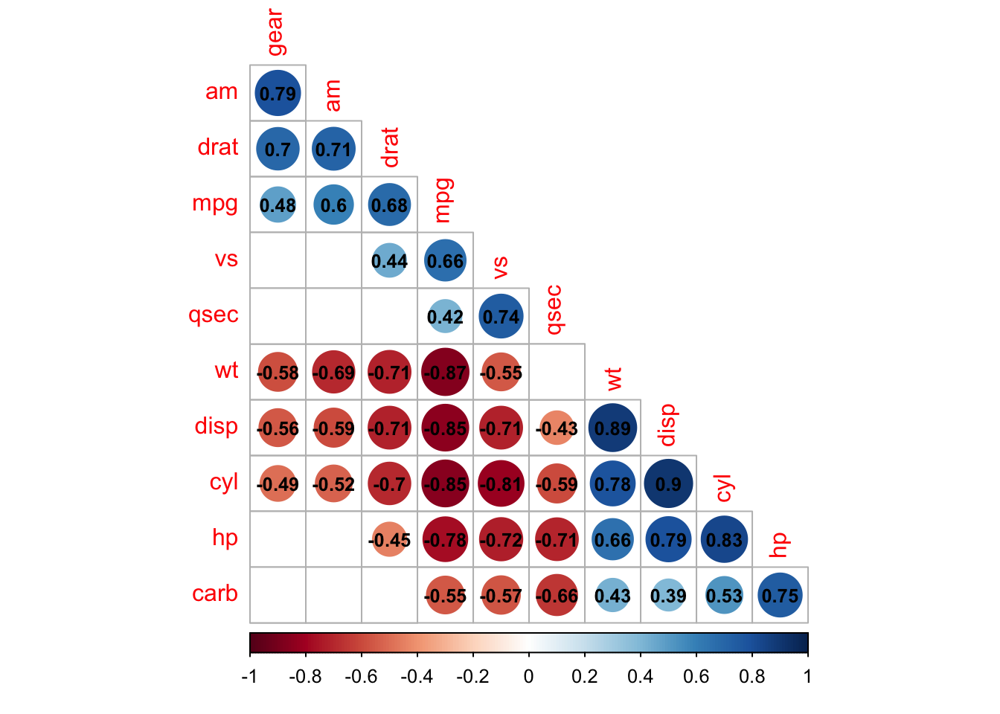
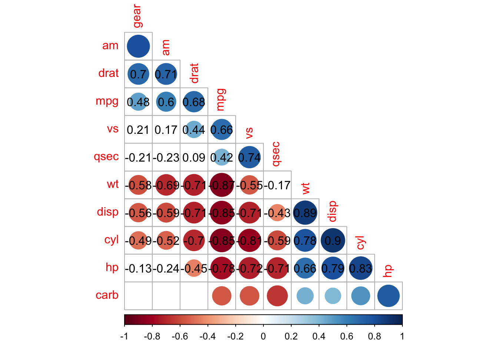

Topic 6: Basic Statistical Analysis
2023-09-07
In this topic, you will learn about :
- Test of association (Pearson Chi-Square and Fisher’s Exact test)
- Correlation test
Pearson Chi-Square Test
Pearson’s Chi-Square Test for Independence in R
Pearson’s Chi-Square test for independence is a statistical test used to determine if there is a significant association between two categorical variables. It assesses whether the observed frequency distribution differs significantly from the expected frequency distribution under the assumption of independence.
Performing Pearson’s Chi-Square Test:
- Using chisq.test(): The chisq.test() function in R is used to perform Pearson’s Chi-Square test.
Example: Pearson’s Chi-Square Test
Suppose we have survey data on the relationship between gender and favorite color and want to test if there is a significant association between the two variables.
# Sample data for gender and favorite color
gender <- c("Male", "Female", "Male", "Female", "Male", "Female", "Male", "Female")
favorite_color <- c("Blue", "Red", "Blue", "Blue", "Red", "Red", "Blue", "Red")
# Create a contingency table
cont_table <- table(gender, favorite_color)
# Perform Pearson's Chi-Square test
chi_square_result <- chisq.test(cont_table)## Warning in chisq.test(cont_table): Chi-squared approximation may be incorrect##
## Pearson's Chi-squared test with Yates' continuity correction
##
## data: cont_table
## X-squared = 0.5, df = 1, p-value = 0.4795Interpreting the Output:
The output of the chisq.test() function includes the Chi-Square statistic, degrees of freedom, and the p-value. The p-value indicates the probability of obtaining the observed contingency table or more extreme tables under the assumption of independence.
If the p-value is below a pre-defined significance level (commonly 0.05), we reject the null hypothesis and conclude that there is a significant association between gender and favorite color.
- Using Residuals:
The residuals can be helpful in interpreting the direction and magnitude of the deviation from independence.
# Extract residuals from the chi-square result
residuals <- chi_square_result$residuals
# Print the residuals
print(residuals)## favorite_color
## gender Blue Red
## Female -0.7071068 0.7071068
## Male 0.7071068 -0.7071068Summary:
- Pearson’s Chi-Square test for independence is used to determine if there is a significant association between two categorical variables.
- The chisq.test() function in R is used to perform Pearson’s Chi-Square test.
- The p-value obtained from the test helps to make a decision about rejecting or failing to reject the null hypothesis of independence between the two categorical variables.
- Residuals can be used to interpret the direction and magnitude of the deviation from independence.
Fisher’s Exact test
Fisher’s Exact Test in R Programming
Fisher’s Exact test is a statistical test used to determine if there is a significant association between two categorical variables in a 2x2 contingency table. It is particularly useful when the sample size is small or when the assumptions of the Chi-Square test are not met.
Performing Fisher’s Exact Test:
- Using fisher.test(): The fisher.test() function in R is used to perform Fisher’s Exact test.
Example: Fisher’s Exact Test
Suppose we have survey data on the relationship between gender and voting preference and want to test if there is a significant association between the two variables.
# Sample data for gender and voting preference
gender <- c("Male", "Female", "Male", "Female")
voting_preference <- c("Republican", "Democrat", "Democrat", "Republican")
# Create a contingency table
cont_table <- table(gender, voting_preference)
# Perform Fisher's Exact test
fisher_result <- fisher.test(cont_table)
# Print the test result
print(fisher_result)##
## Fisher's Exact Test for Count Data
##
## data: cont_table
## p-value = 1
## alternative hypothesis: true odds ratio is not equal to 1
## 95 percent confidence interval:
## 6.412991e-03 1.559335e+02
## sample estimates:
## odds ratio
## 1Interpreting the Output:
The output of the fisher.test() function includes the p-value. The p-value indicates the probability of obtaining the observed contingency table or more extreme tables under the assumption of independence.
If the p-value is below a pre-defined significance level (commonly 0.05), we reject the null hypothesis and conclude that there is a significant association between gender and voting preference.
- Using Odds Ratio:
The odds ratio is a measure of association between two categorical variables in a 2x2 contingency table. It quantifies the strength and direction of the relationship.
# Extract odds ratio from the Fisher's Exact test result
odds_ratio <- fisher_result$estimate
# Print the odds ratio
print(odds_ratio)## odds ratio
## 1Summary:
- Fisher’s Exact test is used to determine if there is a significant association between two categorical variables in a 2x2 contingency table, especially when sample sizes are small or Chi-Square test assumptions are not met.
- The fisher.test() function in R is used to perform Fisher’s Exact test.
- The p-value obtained from the test helps to make a decision about rejecting or failing to reject the null hypothesis of independence between the two categorical variables.
- The odds ratio can be used to measure the strength and direction of the association between the variables.
Correlation test
Correlation Test in R Programming
Correlation is a statistical measure that indicates the extent to which two continuous variables are linearly related to each other. Correlation tests in R help to determine if there is a significant association between two continuous variables and to quantify the strength and direction of the relationship.
Performing Correlation Test:
- Pearson Correlation (cor.test()): The cor.test() function in R is used to perform Pearson’s correlation test. It tests for a linear relationship between two continuous variables.
Example: Pearson Correlation Test
# Sample data for two continuous variables
x <- c(1, 2, 3, 4, 5)
y <- c(3, 5, 7, 9, 11)
# Perform Pearson correlation test
cor_test_result <- cor.test(x, y)
# Print the test result
print(cor_test_result)##
## Pearson's product-moment correlation
##
## data: x and y
## t = 82191237, df = 3, p-value < 2.2e-16
## alternative hypothesis: true correlation is not equal to 0
## 95 percent confidence interval:
## 1 1
## sample estimates:
## cor
## 1Interpreting the Output:
The output of the cor.test() function includes the correlation coefficient (r), the p-value, and the confidence interval for the correlation coefficient. The correlation coefficient (r) measures the strength and direction of the linear relationship between the two variables.
If the p-value is below a pre-defined significance level (commonly 0.05), we reject the null hypothesis and conclude that there is a significant correlation between the two variables.
- Spearman Correlation (cor.test()): You can also use the cor.test() function to perform Spearman’s correlation test, which tests for a monotonic relationship between two variables. Spearman’s correlation is more appropriate for data that are not normally distributed or have outliers.
Example: Spearman Correlation Test
# Sample data for two continuous variables
x <- c(1, 2, 3, 4, 5)
y <- c(3, 5, 7, 9, 11)
# Perform Spearman correlation test
cor_test_result <- cor.test(x, y, method = "spearman")
# Print the test result
print(cor_test_result)##
## Spearman's rank correlation rho
##
## data: x and y
## S = 4.4409e-15, p-value = 0.01667
## alternative hypothesis: true rho is not equal to 0
## sample estimates:
## rho
## 1- Kendall Correlation (cor.test()): The cor.test() function can also perform Kendall’s correlation test, which tests for a monotonic relationship between two variables similar to Spearman’s correlation. Kendall’s correlation is appropriate when dealing with small sample sizes.
Example: Kendall Correlation Test
# Sample data for two continuous variables
x <- c(1, 2, 3, 4, 5)
y <- c(3, 5, 7, 9, 11)
# Perform Kendall correlation test
cor_test_result <- cor.test(x, y, method = "kendall")
# Print the test result
print(cor_test_result)##
## Kendall's rank correlation tau
##
## data: x and y
## T = 10, p-value = 0.01667
## alternative hypothesis: true tau is not equal to 0
## sample estimates:
## tau
## 1Summary:
- Correlation tests in R help to determine if there is a significant association between two continuous variables.
- Pearson correlation is used for normally distributed data with a linear relationship.
- Spearman and Kendall correlations are used for non-normally distributed data or data with outliers, and they test for monotonic relationships.
- The p-value obtained from the correlation test helps to make a decision about rejecting or failing to reject the null hypothesis of no correlation between the two variables.
Additional notes
An Introduction to corrplot Package
R package corrplot provides a visual exploratory tool on correlation matrix that supports automatic variable reordering to help detect hidden patterns among variables.
## corrplot 0.92 loaded








corrplot(M, method = 'square', order = 'AOE', addCoef.col = 'black', tl.pos = 'd',
cl.pos = 'n', col = COL2('BrBG'))
## bottom color legend, diagonal text legend, rotate text label
corrplot(M, order = 'AOE', cl.pos = 'b', tl.pos = 'd',
col = COL2('PRGn'), diag = FALSE)## text labels rotated 45 degrees and wider color legend with numbers right aligned
corrplot(M, type = 'lower', order = 'hclust', tl.col = 'black',
cl.ratio = 0.2, tl.srt = 45, col = COL2('PuOr', 10))Visualize p-value and confidence interval
testRes = cor.mtest(mtcars, conf.level = 0.95)
## specialized the insignificant value according to the significant level
corrplot(M, p.mat = testRes$p, sig.level = 0.10, order = 'hclust', addrect = 2)## leave blank on non-significant coefficient
## add significant correlation coefficients
corrplot(M, p.mat = testRes$p, method = 'circle', type = 'lower', insig='blank',
addCoef.col ='black', number.cex = 0.8, order = 'AOE', diag=FALSE)
## leave blank on non-significant coefficient
## add all correlation coefficients
corrplot(M, p.mat = testRes$p, method = 'circle', type = 'lower', insig='blank',
order = 'AOE', diag = FALSE)$corrPos -> p1
text(p1$x, p1$y, round(p1$corr, 2))
## add significant level stars
corrplot(M, p.mat = testRes$p, method = 'color', diag = FALSE, type = 'upper',
sig.level = c(0.001, 0.01, 0.05), pch.cex = 0.9,
insig = 'label_sig', pch.col = 'grey20', order = 'AOE')References
Michael Friendly (2002). Corrgrams: Exploratory displays for correlation matrices. The American Statistician, 56, 316–324.
D.J. Murdoch, E.D. Chow (1996). A graphical display of large correlation matrices. The American Statistician, 50, 178–180.
Michael Hahsler, Christian Buchta and Kurt Hornik (2020). seriation: Infrastructure for Ordering Objects Using Seriation. R package version 1.2-9. https://CRAN.R-project.org/package=seriation
Hahsler M, Hornik K, Buchta C (2008). “Getting things in order: An introduction to the R package seriation.” Journal of Statistical Software, 25(3), 1-34. ISSN 1548-7660, doi: 10.18637/jss.v025.i03 (URL: https://doi.org/10.18637/jss.v025.i03), <URL: https://www.jstatsoft.org/v25/i03/>.
https://cran.r-project.org/web/packages/corrplot/vignettes/corrplot-intro.html